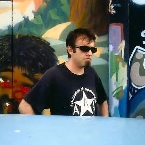

Bad Trip > Biografia
Biografia

Gianluca Lerici, noto con il nome d'arte di Professor Bad Trip, viene al mondo nel 1963 a La Spezia. Negli anni 80 si avvicina al movimento punk italiano, dove inizia a cantare nel gruppo spezzino Holocaust. In questi anni inizia a produrre le prime illustrazioni di fanzine e volantini con lo pseudonimo di Professor Bad Trip.
Nel 1983 conosce Jenamarie Filaccio, alias Good Jena, artista americana e futura compagna di vita. Il loro connubio artistico darà vita al progetto OMI, con l'obiettivo di promuovere l'arte e la cultura.
Laureato all'Accademia delle belle arti di Carrara in Scultura, negli anni '90 Gianluca collabora con numerose case editrici come Mondadori, Simon & Schuster e Shake. Negli anni il Professore continua a sviluppare il proprio stile inconfondibile che mescola psichedelia e cyberpunk, influenzato da scrittori come William S. Burroughs, James Graham Ballard e Philip K. Dick. Esalta la sua arte con l'abilità di serigrafo e lavora su ogni materiale possibile, creando innovative opere di design. Grazie alla sua produzione continua si afferma come uno degli artisti visuali underground più importanti della scena italiana ed europea.
Muore il 25 novembre 2006 all'età di 43 anni, stroncato da un infarto, lasciandoci in eredità una produzione artistica unica e sconfinata.
Sai come ha fatto il Professor Bad Trip a produrre così tanto? Perchè ci ha messo dentro l'amore
- Jenamarie Filaccio